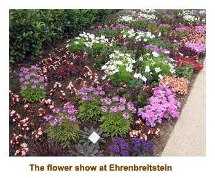
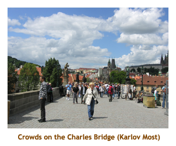

[ Home ] [ Travel ] [ Photography ] [ Pets ] [ Games] [ Rowing] [ Physics ]


Cruising on the River Ambassador
Travel
Cruises
Past Cruises (Diaries)
Future Cruises
Rogues Galleries
Land Trips
Diaries (Land Trips)
Hawai'i - Big Island - 04'01
Hawai'i - Maui - 05'02
Hawai'i - Big Island - 04'03
Hawai'i - Kaua'i - 09'04
Hawai'i - Big Island - 04'06
Hawai'i - Maui - 04'06
Mainland China - 05'07
Phoenix, Arizona - 12'07
Greek Isles - 05'08
Hawai'i - Kaua'i - 09'08
Hawai'i - Big Island - 09'09
Hawai'i - Maui - 05'12
Hawai'i - Big Island - 04'13
Ireland - 08'13
Mexico - Cancun 11'13
France/Belgium/Lux 07'15
Hawai'i - Big Island - 05'17
England / Wales - 06'17
Hawai'i - Big Island - 09'19
Photography
Cameras
Underwater
Pets
Tara
Blackie
Whitey
Muffy
Ollie
Rusty
Fluffy
Rufus&Dufus
Games
Rowing
Physics
Rating (out of 5):
Ship  Food
Food  Service
Itinerary
Service
Itinerary
This was our first attempt at a river cruise. In the past we had avoided them as the scheduling was really inflexible. We were used to ocean cruises where we could cancel or change the cruises at will with no penalty. With a river cruise, you are locked in as soon as you put down the deposit. This cruise (plus our following Danube cruise) popped up as a TA special at 65% off, so we jumped at the offer and booked both of the cruises. They were a week apart, so we planned some land time in between the cruises. This diary covers the first of the two cruises. Please go to the Danube cruise diary for the second half of the trip.
This leg of our holiday consisted of a 7 day cruise on the Rhine and Main rivers with a 2 day extension in Prague. Because we had several days between the two cruises, we added an extra day in Prague to make sure we had plenty of time to see the city. The cruise would take us on the Rhine and Main rivers, a brief stop on the Moselle River, and a short distance on the Rhine/Main/Danube Canal.
River cruising is very different from ocean cruising and is a new experience for us. For
the benefit of other ocean cruisers wondering about river cruising, I have incuded a
section at the end of this diary that attempts to describe life aboard a river boat. It is
an accumulation of items from both the Rhine and the Danube cruises.
Pre-cruise (Jun 9 - 11) - A visit to Cologne
We were picked up from our home by the shuttle at 12:20 PM. It was a warm, sunny day.
We said goodbye to the cats who were going to be looked after by Heather.
We got to the airport about 1:15 and Chrissy joined us for a bit. We did security and waited for our 3:20 flight.
The flight to Amsterdam was uneventful and we arrived there about 7:20 AM. We went through EU customs
and then had a long walk to the opposite end of the airport. Our Fokker 70 was out on the tarmac
(we were bused) with a whole bunch of "City Hopper" planes. It was a 1 hour flight to Cologne. It
was cloudy and about 18 degrees. We caught the train into town and had a short walk to our hotel,
arriving by 11:30 AM. Our hotel (the Dom Hotel)
was right across the plaza from the huge Dom cathedral.
After checking in, we wandered over to the Dom. What a beautiful cathedral!
There was a posting about a free concert in the evening. We wandered down to the
waterfront and checked out the various river cruise boats along the docking area. We found
a nice place for dinner (schnitzel, fries and salad for Euro 5,90). That evening we popped over to the
Dom for the concert. It was a Mozart Mass and Vivaldi's Gloria and was excellent. The choir was
about 50 voices (men and boys), with an orchestra of 20 or so musicians (and organ!).
The reverberations
lasted about 15 seconds. Amazing! We were back to the hotel by 10:30. It rained overnight.
We woke up early the next day (6 AM). It was cool and cloudy. We walked to a nearby
bakery for breakfast. I had an omelette bun. Dave and Joan were also on a river cruise
(Scenic Tours) and were stopping in Cologne today. Marj had pre-arranged that we visit them on the ship.
We wandered down to the waterfront to look for the Scenic Diamond. There were ships in
both directions and, of course, we headed the wrong way. At the far end of
the ships, we discovered the Chocolate Museum (closed) and a flea market setting up. Then
we headed back to the other end of the ships. We found D&J's ship just as they were heading
off the ship on a walking tour. We were invited to join the tour and given headsets. Near the end
of the tour we walked past our hotel, so we left the tour to get changed for lunch. We rejoined D&J on
the ship and had a tour of the ship and then lunch. Very nice! We left the ship at 2:15 and waved
goodbye as the ship left for Amsterdam. We wandered around the town a bit more and then picked
up a few groceries for dinner. Outside of the Dom, Amnesty International had set up a huge stage
and some rock bands were performing. Fortunately they didn't run over into the evening.
We went to bed early!
Day 1 (Jun 12) - Boarding in Cologne
This morning we slept in and then had some breakfast buns that we had gotten from the grocery
store the day before. Then we wandered down to the waterfront to find our ship. I took note of
our route trying to stay on sidewalks that weren't uneven or cobbled as we would soon have to
drag our suitcases this way. However, the roads through the "old town" area were mostly cobbled
and the sidewalks were uneven. Once again we arrived at the river
in the middle of the line of ships and turned the
wrong way. After checking out all the ships that weren't ours, we turned to walk in the other
direction. Sure enough our ship was at the far end of the line. We returned to the hotel and went
across the plaza to the Dom for the 10:00 AM service (it was Sunday)
that was featuring Bruckner's Mass #2. The church was packed and the music was wonderful.
After the service we packed our bags, checked out of the hotel and dragged our stuff to the ship.
Our earlier "reccy" paid off as we knew the least bumpy route for our luggage.
It was just after noon when we boarded the ship and our rooms wouldn't be ready until 2:00 PM.
We sat in the lounge for a while for a "light lunch" and then sat on the upper deck until our
rooms were ready. Our bags were delivered to the room, so we unpacked and put everything away.
This was certainly the smallest cabin we had ever had, with about 1 foot clearance around the bed.
The safety talk was at 6:00 PM and dinner (for the entire cruise) was at 7:00. I had the stuffed
chicken breast with prosciutto and mozzarella. The entertainment (as for every night) was Stephan
on the synthesizer. Being no other entertainment, we retired to bed.
Day 2 (Jun 13) - Koblenz and the Rhine Valley
Today was cool and cloudy, with a bit of rain. We arrived in Koblenz at 6:00 AM.
This is right at the confluence of the Rhine and Mosel Rivers, and we actually docked
on the Mosel side. At 7:00 I did the morning stretch session with Damir the masseur.
That left me stiff and sore for a couple of days! After breakfast we headed off on a
walking tour of the old part of Koblenz. We visited the basillica of St. Castor and
saw a section of the old city walls where they had marked the high water mark for
several large floods over the past centuries. Then we took the cable cars up to
the fortress (Ehrenbreitstein Fortress)
where there was a huge garden show. We had time to wander through the
floral exhibits. It was very nice. Taking the cable cars back down, we walked
along the bank of the Mosel to our ship. We were back on board by 11:45 as we were
sailing again at noon.

As we were eating lunch, the ship moved back onto the Rhine River and we set sail
for Mainz. This would take us through the famous Rhine Valley, where villages, castles and
vinyards dotted the slopes. The weather got a bit brighter so it was wonderful sitting
on the upper deck watching all of the scenery go by. We passed at least 15 major castles,
and the villages of Boppard, St. Goar (famous Lorelei Rock), Oberwesel, Bacharach and Bingen.
It was wonderful. At 6:00 PM there was a captain's welcome event and port
talk followed by dinner. I had pink roast of veal loin. For the 9:00 entertainment, a shoreside group
came aboard ("La Strada" Trio, 2 violins and guitar). They played some local music including
Czardas (Hungarian). In the mean time, the ship arrived at Mainz at 9:00 PM. It would stay there
for a few hours and sail again at 1:00 AM. Because everthing was closed in town, we decided
just to head to bed. We would miss "Midnight in Mainz".
Day 3 (Jun 14) - Aschaffenburg

Today was another mixed weather day, some cloud, some sunshine. We weren't to dock at Aschaffenberg until 2:00 PM. This gave us a chance to sleep in a bit and then have a leisurely breakfast. At 10:00 AM the cruise manager (Marcus) gave a lecture titled "Modern Germany". It was very interesting, describing the recovery from WWII and the current political situation.
Just after having lunch, we arrived in Aschaffenberg. Our
afternoon walking tour included Schloss Johannisburg and the old town. At the Schloss we
wandered around 3 floors. Some of the rooms were decorated as they were back then - the gold
mirror room was amazing. The rest of the rooms were various art gallery and museum exhibits.
Quite interesting was a collection of scale models of various famous Roman and Greek ruins.
We were back the the Ambassador about
6:00 PM, in time for tomorrow's port talk and dinner. For dinner I had roast of farm duck
leg. Very nice. Afterwards a local band (the "Headlines Show Band") came aboard and played
some lively tunes. They were very good.
Day 4 (Jun 15) - Miltenberg
Today was warm, but cloudy with a bit of sun. We arrived in Miltenberg
about 7:30 AM. We had an early breakfast and then headed off on our 8:30
walking tour. Miltenberg was a small village of beautiful old buildings.
We wandered through the old part of town and then had some free time to
explore some of the side streets or to shop. Marj and I did the main street
and then climbed up to Miltenberg Castle (which was closed). Then we boarded a bus and
drove outside of town to Kleinheubach Castle. Members of the local royal
family (the house of Lowenstein-Wertheim-Rosenberg)
still lived there and one of the Princes gave us a guided tour through
the palace. After the tour, we assembled in the garden area for a wine
tasting. The sun had come out and it was beautiful in the garden. Being
in the Franconia district of Germany, the wines were bottled in the famous
round bottles (Bocksbeutel).
As an interesting note, the guide we had for the morning tour was a lively lady who had many interesting stories. She explained that her sister and her daughter were also tour guides and we may run into them tomorrow.
We were back onboard the River Ambassador
by 1:00 PM, in time to leave for Wurzburg at 1:30 (during lunch).
In the afternoon we were entertained by a glassblower from the local area who came aboard
with propane torches, raw glass and some finished product. He was very interesting
(and entertaining) and
showed what he could do with just a propane torch. After the lecture and demo,
lots of people purchased
items that he had brought onboard. It was very good quality stuff, but we already have a
houseful of stuff! For dinner it was a special "Epicurean Dinner" and I had Franconian
sauerbraten. It was very good but far to many courses. I was stuffed after that!
There was no entertainment tonight, so we went to bed early.
 |
 |
Day 5 (Jun 16) - Wurzburg
We arrived in Wurzburg about 7:30 AM. We had breakfast and then headed off on our tour
at 8:30. Sure enough, our guide was the sister of the lady we had the previous day in
Miltenberg.
It was a short bus ride to the gorgeaous Wurzburg Residenz, the home of Wurzburg`s
prince-bishops. The Residenz has over 400 rooms, but we just went through a few of them.
Afterwards we wandered outside through the gardens. Then we were given the choice of attending
a wine tasting in the Residenz wine cellars, or do a guided walk through the old town.
Most of us opted for the walking tour as we had had plenty of wine the day before. One
of the highlights was the "Old Main Bridge" which was lined with statues of local saints. We
were back onboard the Ambassador in time for a buffet lunch.
After lunch we had signed up for an optional tour to Weikersheim Palace at 1:30. It was
about 1.5 hours by bus along the "Romantic Road" before we reached the village of Weikersheim.
Before attacking the palace, we did a guided walking tour of the village. Our guide was the
daughter of our Miltenberg lady. This was a family affair! The village was quite small so
it didn't take too long to tour.
Our guide for the palace was a local girl dressed as a palace gardener. Once again we travelled
through room after room of palatial furnishings, with lots of gold and silver. Afterwards, we
were given time to wander through the extensive palace gardens. Lots of statues and fountains!
We were given some time to walk around the village of Weikersheim.
We were back to the ship in time for sailing and dinner. For dinner I had oven roast rack of
lamb. The entertainment was a music trivia session hosted by Marcus. He was insistent that spelling
would count, so it became a contest of who could spell the best. I don't think that pleased a
lot of people!
Day 6 (Jun 17) - Hassfurt (Bamberg)
We weren't supposed to arrive at Hassfurt until 11:00 AM, so when we
woke up at 6:00 and the ship was docked, it was a real surprise. So, I
dressed and ran up to the upper deck to see what was happening. We had
made an unscheduled docking at the village of Schweinfurt, just a hundred
yards or so from the entrance to a lock. I asked the purser's desk what
was going on and was told we were either ahead of schedule or waiting
for other boats to go through the lock. Then I saw a suitcase being taken
off the ship
and put into a taxi. Shortly after we were sailing again. The rumours
flew throughout the day - medical emergency, lecturer coming aboard, etc.
It turned out that a lawyer (I think from BC or Alberta) received an emergency
call for some court case and had to rush back home to attend. At least,
this seemed to be the favoured story.
We had breakfast and then attended a lecture about the European Union. It was very interesting,
giving the history of the union and some of the problems that exist today (ie. the Greek issue, etc).
It was very interesting. At 10:30 they had "Fruhschoppen" (German for "brunch") on the deck. Sausages,
sauerkraut, etc. Having had a big breakfast and looking forward to a dining room lunch, we
decided to forego the extra meal. At 11:00 we arrived in Hassfurt. We ate lunch and then headed
out for our 1:00 PM bus tour to Bamberg. It was about 45 minutes to Bamberg. There, we visited
the Bamberg Dom and the bishop's "new" (as of 17th C.) residence. We toured through the
residence rose garden and then walked to the riverfront and bridges. It was a beautiful town.
We were back to the ship in time for the 6:00 sail away. We had a disembarkation lecture
and then had dinner. I had the Zwibel-roast braften (beef). No entertainment tonight (other
than Stephan).
 |
Day 7 (Jun 18) - Nuremberg

Happy Birthday Johnny! Today was cool and rainy. Once again we were cruising for the morning
and stopping at a port for the afternoon. There was nothing arranged for the morning, so we sat
out on the top deck under cloudy skies, watching the landscape and villages float by. We went
through several locks and had a few bridges that required ducking to the floor. Breakfast and
lunch were wonderful as usual. We arrived at Nuremberg about 12:00 noon, just as we were heading
into lunch. There were two choices of tours this afternoon. One was a WWII tour that visited Nazi
sites and included tours inside some buildings and museums. The alternative was a tour that saw
the same WWII sites from the outside, but instead of spending time indoors, included some other
interesting sites that had nothing to do with WWII. Neither Marj nor I are WWII buffs, so we
chose the second option.
It was raining on and off as we toured the city. Our first stop was at the huge rally
ground where you've seen photos of Hitler addressing the masses of soldiers
(the Reichsparteitagsgelande). Without the
soldiers and decorations, it's just an ugly mass of concrete bleachers and out buildings.
Back in the bus we drove by the huge, uncompleted "coliseum" building
(the Kongresshalle) that was to be
one of the highlights of the 3rd Reich. Leaving the WWII stuff, we stopped at a large
cemetery (St. John's cemetery) dating to the 17th century. There were rows and rows of
sandstone tombs, each one a floral masterpiece of flowers and shrubs. I don't know who
maintains the tombs, but it was an absolutely awesome sight. Then we drove to the Kaiserburg
(Kaiser's palace, built in 1070). After walking the palace grounds, we had a tour of the
"old town", followed by some free time. We went into the huge Frauenkirche where a baptism
service was in progress. We sat and listened to the pipe organ and singing for a while.
Then it was back to the ship. For dinner I had - ach! I don't remember! However, we had
dinner with our new friends Pat and Al and it was Pat's birthday tomorrow, so we had
two birthday cakes for desert. For the entertainment we had a local oompah band (Premium
Bavaricum) who were excellent.
Day 8 (Jun 19) - Transfer to Prague
This morning we were up early, had breakfast and were ready for our 8:30 departure
to Prague. It was a clear, sunny day! There were three buses to take the 110 passengers
on the 4 hour trip to the Czech Republic capital city. The drive was very interesting
through the countryside and small villages. The crossing from Germany into the Czech Republic
was transparent as they are both part of the EU. If the guide had not pointed it out, we
wouldn't have known that we had crossed the border. We finally entered into Prague and
were dropped off at the Imperial Hotel, just a block from the "old town" area
about 12:30. There we met
the next set of passengers for the return cruise (Nuremberg to Cologne) who did the 2 day
extension in Prague at the beginning of their cruise. They boarded our emptied buses for the
drive back to Nuremberg. Our rooms weren't ready yet, so we checked our bags and headed off
to checkout the town.
The first thing we needed was some Czech cash. I stopped at a nearby ATM and selected
2,000 karuna (about $120 Cdn). When it spit out the money there was a single "thunk",
and out came a single 2,000 karuna note. How useful! I went back to the hotel and they
changed it into much smaller bills. Our room was ready so we took up our bags and settled
in. It was mid afternoon and we decided to go for lunch/supper. We tried a nearby
restaurant (Kolkovna Celnice)
for beef and dumplings (and a litre of gravy).
Afterwards we walked to the Municipal house to buy
tickets for an evening concert of Smetana, Dvorak, Mozart, Brahms and others. We actually
went into the concert hall to select our seats. We returned to the hotel for a rest
and then headed back for our 8:30 concert. It was excellent. Time for bed!
Post-cruise (Jun 20 - 22) - 2 days in Prague
Our next day in Prague was included in the cruise package, and they provided a
half day walking tour of the city. We had breakfast and then met outside at the bus at 8:30.
The bus took us across the Vltava River to the Prague Castle. From there, the rest
of the tour would be walking. We toured through the castle which included several buildings
(including Vladislav Hall) and a church (St. Vitus'). Then we walked down the "Golden Lane" of
11 miniature houses built into the city wall. After leaving the castle grounds, we walked
over the Charles Bridge to the "old town". On the bridge were several musical groups (buskers).
In fact, everywhere we walked in prague there seemed to be musical groups, and they were
excellent musicians to boot. We ended the tour at the astronomical clock.
Being just after noon, we decided to walk back over the bridge to the west side and
find the restaurant that Mike & Stacy had enjoyed a couple of months earlier
(Malostranska Beseda). We found it
and it was very good.

After lunch we toured through St. Nicholas right across from the
restaurant. There was a small entrance fee but it was certainly worth it. Then we wandered
back across the bridge to the east side. At St. Francis we bought some tickets for an
evening concert. We actually placed little cards on the seats that we wanted. Then it was
back to the hotel for a rest. We had been walking for 6 hours. We had some snackies for dinner
and then headed back to the 8:00 PM concert (organ, trumpet and soprano). It was excellent.
The music was mostly unfamiliar, by various local composers.
We met another couple from the ship there and walked back
to the hotel with them in the rain. It had
been a great day.
The next day was a day on our own. We had breakfast at the attached art deco restaurant.
Then we did a walk to the main train station (Praha hlavni nadrazi)
to familiarize ourselves where it was, and to map
out a good route for dragging suitcases. The train station was huge. In the tradition of
music everywhere, the little "bing-bong" ditty preceding every train anouncement was a short
idiom from "The Moldau" by Smetana. Very cute! We went to the ticket counter and bought our
tickets to Munich for the following day. Then we walked the tunnel and climbed up to the
tracks to check out the layout of the platforms. Looked pretty simple. Heading back to the
hotel, we stopped at a restaurant for lunch
(the Hybernia). We spotted a couple from the cruise (ex-South
Africans from Las Vegas) so we joined them at their table. (That's a real cruising thing -
always join others at their table!).
We wandered back to the old town and visited two large cathedrals - the Tyn Church and St. Jacob's. They were marvelous. St. Nicholas church had just closed, so we couldn't see it. Then we headed over to the Jewish quarter. We viewed the Spanish Synagogue and the "old-new" Synagogue, but didn't go in as there was a charge. We also circled the Jewish Cemetery from the outside as likewise there was a charge to get in. We did not book a concert for the evening, but rather spent the time packing our stuff ready for our trip to Munich the next day.
We were up early the next day to have breakfast (a wonderful buffet breakfast was included
with the hotel booking). Then we checked out. (Or is it Czech'ed out?). The cruise had
included a 2 night stay in Prague and we had independently booked the third night on our own.
However, when we checked out they told us that all 3 nights were being billed to Uniworld.
Woohoo - a freebee! Then we hauled our bags over to the train station and hopped on our
9:10 AM train to Munich. Please jump to the Danube cruise diary for a continuation of the
trip.
Addendum: Life on a River Cruise
I normally focus my cruise diaries on the itinerary and what we did, and mention the ship and it's amenities only in passing. However, in this case the ship and shipboard experience is so unique that I thought it would be valuable to understand how this differs from the norms of the mass market ocean cruise lines. If you're expecting a similar experience to an ocean cruise, you are in for a big surprise! Note that the descriptions below are based on our own experience, plus talking to others who have done river cruises. There could be ships we are unaware of that differ from the "usual" ships that we are familiar with.
 The ships look very strange. At first glance, a
river boat is a strange looking ship. However, there are several things that
dictate what it will look like. First of all, the rivers have many locks.
The shortest lock in the system sets a maximum on the length of the ship and
the narrowest lock constrains the beam dimension. Likewise, there are many
bridges crossing the rivers, and the lowest bridge sets a limit on the maximum
height of the ship. As a result, the river boats look like floating cigars.
A few ships that run on the Volga (Russia), Dnepr (Ukraine), Yangtze (China),
etc. have no low bridges or narrow locks to contend with,
so these ships can be larger than the typical European river boat. The
height restrictions limit a ship to either three or four decks. On the
four deck ships, the lowest deck is actually mostly below the waterline,
and the cabins have small windows high up on the wall.
The ships look very strange. At first glance, a
river boat is a strange looking ship. However, there are several things that
dictate what it will look like. First of all, the rivers have many locks.
The shortest lock in the system sets a maximum on the length of the ship and
the narrowest lock constrains the beam dimension. Likewise, there are many
bridges crossing the rivers, and the lowest bridge sets a limit on the maximum
height of the ship. As a result, the river boats look like floating cigars.
A few ships that run on the Volga (Russia), Dnepr (Ukraine), Yangtze (China),
etc. have no low bridges or narrow locks to contend with,
so these ships can be larger than the typical European river boat. The
height restrictions limit a ship to either three or four decks. On the
four deck ships, the lowest deck is actually mostly below the waterline,
and the cabins have small windows high up on the wall.
The cabins are small.
Another result of the overall size constraints is that the normal cabins
are quite small. One can always book a suite (somewhat larger), but the
price may prohibit this. On four deck ships, the lowest deck cabins are
partly below the waterline, so there is a fixed window (or two) high up
on the wall from where you can see the ducks swimming by. The above water decks
generally feature cabins with either a large fixed window, a "french" balcony
(sliding glass door with bars across it), or a narrow balcony.
Most cabins seem to have a small bar fridge - great for storing drinks not
available onboard (from a Rewe or Lidl grocery store).
Electrical power is generally available in both 110 V and 220 V varieties with the
corresponding plug shapes. However adaptors and converters are really handy.
One thing still antiquated on river boats is that they don't have
all-in-one cruise cards. Access to the cabin was by a separte key.
On one ship we had hotel type magnetic key cards, and
on another we had old-fashioned metal keys with a large wooden fob.
On/off the ship was controlled by room number cards that we picked
up as we left the ship and returned as we boarded. And for
any costs incurred along the way, we used our credit card.
There are 3 main public areas. The ships
feature three main public areas. On the top deck, most of the deck is set
up for sitting on deck to watch the scenery roll by. Some ships have
large chess sets or shuffleboard to provide some entertainment. Generally
some of the sitting area is covered, to provide shade on sunny days and
shelter on rainy days. The covers must be removable or collapsible so
that low bridges won't take them out. The furniture is a mix of chairs
and tables, and lounge chairs with cumfy cushions.
The second main public area is an indoor lounge. There is usually enough seating for all of the passengers. The lounge is generally open for passengers wanting a drink from the bar, or just to sit with friends and watch the scenery. The lounge is also used to present lectures during the day, and port talks and entertainment in the evenings. Some lines offer a light lunch in the lounge as an alternative to a full lunch in the dining room.
The third public area is the dining room. This area has seating
for all passengers and serves breakfast, lunch and dinner. In the center
of the dining room is a "serve yourself" style buffet area. Breakfast
is usually buffet style. Some food items are premade and ready to serve,
with an area where omelettes and other egg dishes are made to order.
Lunch can be either buffet style or menu style
(or both) depending on the cruise line. There is generally an area
where pasta or some other dish is made to order. Dinner is menu style only. All
meals are open seating, so you can sit anywhere, with whomever you want.
Dinner is normally served from 7:00 PM to 9:00 PM and takes 1.5 to 2 hours,
so flexible dining times are not really available, other than being able to
delay sitting until 7:15 or so. Most of the cruise lines "include" juices, soda,
beer and wine, but only at meal times (and in the dining room). Some lines
provide these items at lunch and dinner, and some only at dinner. At all
other times you pay for these drinks. Check with the cruise line to see
what they offer.
There may be other amenities.
Some of the newer ships offers some other public amenities aboard. Some of
the ones we have encountered are as follows:
- Public laundry facility. Generally this is a small room with a couple of washers and dryers. They may be free, or a minimal charge. Soap powder is usually available for $1.00 or so. An ironing board and steam iron are also generally provided.
- Fitness center. A small fitness center is sometimes provided, usually with a treadmill, a bike and a stepper or eliptical. On Uniworld they also had a rowing machine.
- Bicycles. Most of the ships seemed to have about 6 or so bicycles that could be booked at each port stop. We saw lots of passengers riding around the towns that we stopped at. The bikes were in good condition and looked easy to ride.
- Library. Some ships have a separate little room that is a library. Others just use a corner of the lounge area.
- Swimming pool. We have only seen one ship that has a small swimming pool and that is the brand new River Antoinette (Uniworld). There may be others, but a pool (or hot tub) is very rare.
- Internet and wi-fi. Wi-fi and internet are widely available on river cruise ships. For some lines the wi-fi is included, while others charge per minute. We found the quality of the connection to be terrible. Often the internet was not available at all, and when it was, it was extremely slow.
There are minimal (but adequate) tours and entertainment.
River cruises generally include at least one tour per port stop, and
they are included in the price of the cruise. Occasionally there may
be a choice of "included" tours, but more often one or two "optional"
tours are offered at an additional cost. For those ocean cruisers used
to 10 to 20 different tours available at a port, one or two seems
pretty meagre, but we have found the included tours to be wonderful.
Tour groups are generally 30 or less people and everyone gets a Vox receiver
and earpiece so that all can hear the tour guide clearly. Lots of free
time is given at historic or shopping areas to do things on your
own. By the way, the
included tours are optional in that if you want to just do your own
thing, then let the cruise manager know and skip the tour.
Evening entertainment is meagre, but what they do have is excellent. Every night a cruise ship musician plays the piano or synthesizer after dinner for dancing or just listening. About every second night a local group from a nearby town is brought aboard for an hour long show. We have found the local entertainment to be excellent - oompah bands, dixie bands, singers, dancers, etc.
There are also lecturers brought onboard to cover topics relavent
to the cruise. For example, we had lecturers to talk about modern
Germany, the history of the EU, and the life of Sissy (the popular
Austrian Empress). They are generally very well informed and
certainly add to the appreciation of the area being cruised.
Docking is a breeze. Docking
facilities seemed to be everywhere along the river. The river boats
are highly maneuverable and have no problem squeezing in between
other docked ships. In popular multi-day ports such as Vienna or
Budapest the ships may be forced to double or triple park in which
case passengers may have to walk through one or two other ships in order
to finally reach the dock. The docking area is generally in or close
to the center of town. Walking tours can usually start right off the ship.
Occasionally a bus is required.
One of the big advantages of a small ship is that there is
never anything close to a lineup getting on and off the ship.
There is also no security - you don't have to card in or out and
there is no scanner for people or bags. You just walk on or off as
you wish. Uniworld has special room number cards that we picked
up and dropped off at the purser's desk and these were used
to know when everyone was back onboard.
Watch out for low bridges.
Although most of the bridges crossing the rivers are a decent height,
there are a few that are quite low, and this, of course, sets a
limit on the max height of a ship. Remember too that the level of
the river changes throughout the year, occasionally prohibiting
some of the large ships from passing through. River cruise lines
have engineered their ships to take advantage of every last inch of
available height, featuring innovative designs to allow lowering
top deck structures and even the ship's bridge
itself so that the ship
can squeeze through the tightest spots. Even with everything lowered
and tucked away, some of the bridges are cleared by only 2 or 3
inches!
When we first heard about the low bridges on the rivers, I assumed
that for safety's sake, all of the passengers would be cleared to
a lower deck. Not so. The whole liability thing is so different
in Europe than in North America. Instead, the captain blows a
special warning horn and passengers are meant to prostrate themselves
on the deck so that they don't end up as 3-D grafitti on the
side of a bridge. Yes, just sitting or slouching in a chair was
often not good enough, one had to get right down on the ground.
The ups and downs of the locks. Despite their
excellent design, river boats are not made to run rapids. This would certainly make
the cruise more exciting! So, every so often, depending on the drop of the river,
there are locks. (Note: in the olden days, before the locks
were built, ships could only
travel downstream and would be dismantled and carried back upstream again on land.
Later on they developed pathways along the river so that ships could be pulled
upstream by men on shore.) The general layout of a lock system is a lock to one side,
with the
main part of the river controlled by a spillway and hydro power generator. Sometimes
there was a double lock so that ships could be handled in both directions at the same
time.
Each lock took about 1/2 hour to go through. The ship often only had a few inches of
clearance on either side. This made it possible for entertainers and lecturers to
enter or leave the ship as it went through a lock. Several times the passage
through a lock occurred at lunch or dinner time when we were in the dining room.
At the bottom of our descent (or start of ascent)
the black timbered walls of the lock only inches from the windows would plunge the
dining room into darkness. Very strange! On the Rhine/Main cruise we passed
through 42 locks, and on the Danube cruise we passed through 12 of them. Lift heights
varied from a few feet to a 70 footer near Nuremberg.
What you'll see on the river. The rivers
and canals can be quite busy with river cruise ships and other commercial
traffic. The rivers were at one time the major way of travelling and
shipping, and much of this remains today. Along the riverbanks you
will see loading and unloading facilities for everything from grain to
oil to automobiles. And, of course, on the busier river sections you will see
all kinds of river barges carrying coal or lumber or whatever. The
barges are constrained by the same lock dimensions, to they are the
same profile as the river cruise ships. In a lot of cases the barge
owner and family live aboard the barge in a cabin at the back of
the boat. Some of the cabins looked quite deluxe and most families
had their family car aboard as well. While stopping to load
or unload their cargo, a shoreside crane would sling the car onto the
dock so the family could buzz around the town to shop or whatever.
We also saw many different types of waterbirds along the rivers. There were lots of mallard ducks, various types of geese, and white swans. Also common were lone great blue herons in the shallower water.
Finally, each river is marked with the distance from the headwaters.
At each kilometer there is a sign on the bank
showing the total distance, and
every 100 meters there is a 1/10 km number (eg. 1, 2, 3, etc). So, you
can easily tell how far you have travelled, or what speed you are going.
Note: the headwaters of the Danube are underground, so it is the only
river to measure distance "backwards" starting from the mouth in the
Black Sea.